소풍 옆 차도


네이버 지도로 위치를 잡고 거리뷰 64컷을 촬영했다. 같은 장소를 Blender로 만든 뒤, 웹에서 33개 구도로 다시 찍어 비교했다.
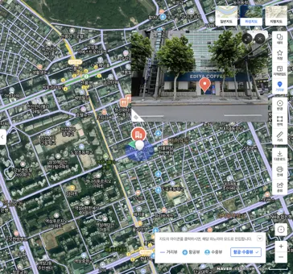
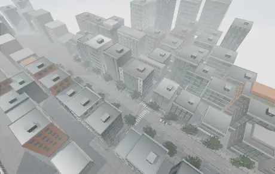
촬영 순서대로 모은 거리뷰와 장소별 3D 검수 화면이다. 사진을 누르면 같은 목록을 차례로 넘겨볼 수 있다.

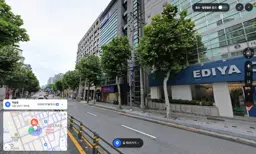
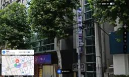


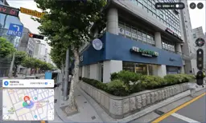
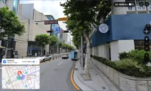
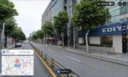
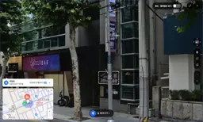


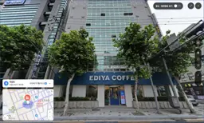

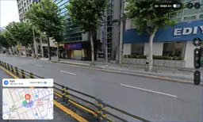
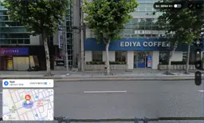


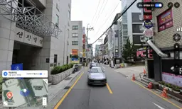
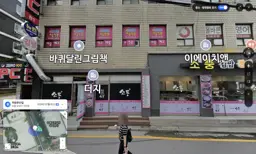


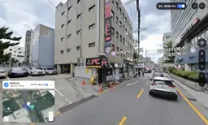


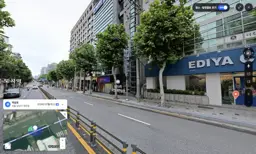
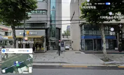
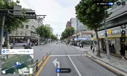


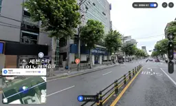
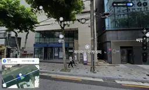


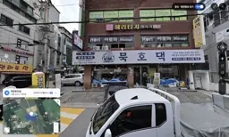
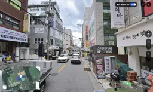

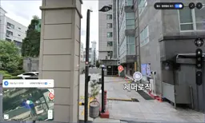


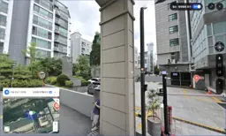
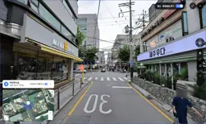
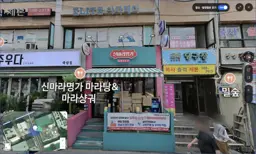


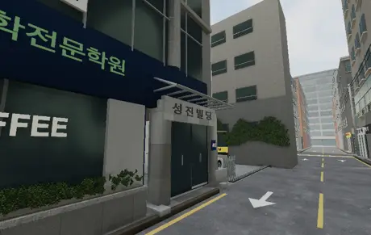
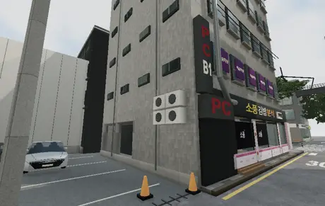

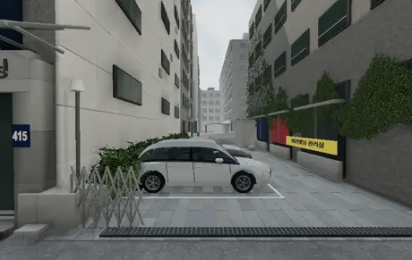
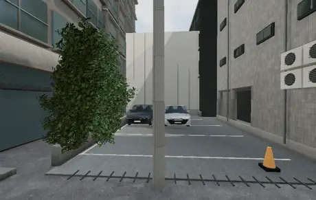


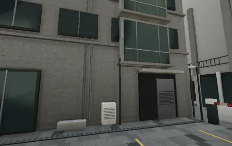
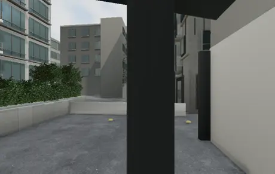

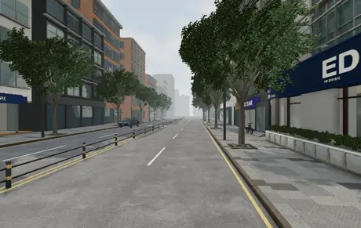

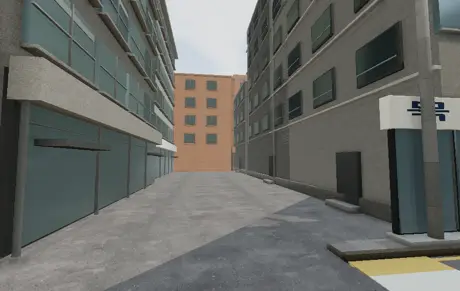

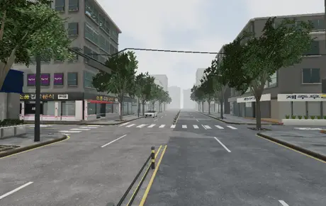


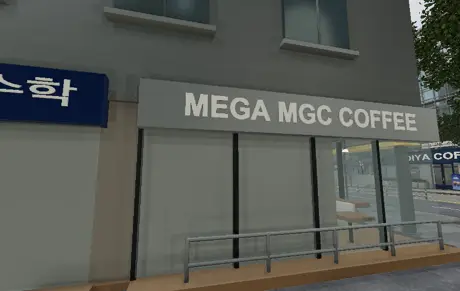


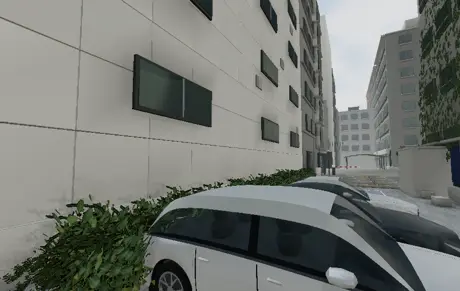

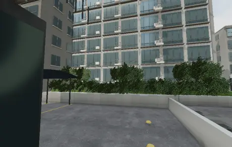

왼쪽은 2026년 7월 네이버 거리뷰, 오른쪽은 산책 시뮬레이터에서 촬영한 화면이다. 사진을 누르면 크게 볼 수 있다.

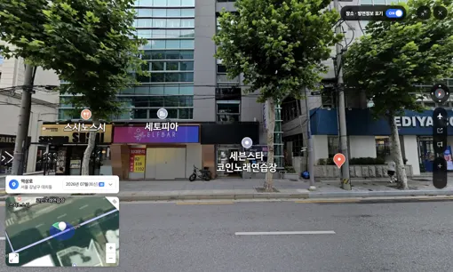
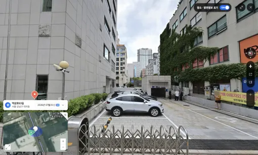
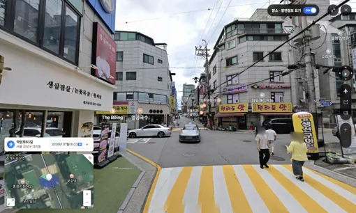

2026년 11월 23일. 처음 남은 시안부터 마지막 웹 검수까지, 대화에서 바뀐 요구와 그때의 화면을 함께 엮었다.
첫 질문은 Blender로 만든 풍경을 브라우저에서 얼마나 현실적으로 보여줄 수 있느냐는 것이었다. 첫 시안을 저장하고 같은 위치에서 다시 찍었다. 이어 캐릭터 뒤에서 보는 3인칭 화면으로 바꿨다.
“니맘대로 재구성하지말고”라는 피드백에 따라 정면, 양옆 점포, 화단, 간판과 모서리를 나누어 촬영했다. 사진에서 읽은 창과 벽의 비율을 Blender에서 고치고 웹에서 점포를 가까이 보았다.
소풍으로 들어가는 쪽이 차도라는 지적으로 모퉁이 보도를 잘라내고 연석과 노면 표시를 다시 배치했다. 별도로 후면 촬영 지점을 찾아 포장과 주차면, 주차 차량을 확인했다.
처음 접속하면 항공뷰에서 기다리고 버튼으로 보행을 시작하게 했다. 카메라 높이와 시작 위치를 조정하고, 로딩 중에도 장면이 보이게 했다.
레서판다 시안을 거쳐 셔츠와 니트를 입은 남녀 캐릭터로 바꿨다. 점프 자세와 달릴 때의 몸 흔들림을 조정하고 목적지까지 이동하는 장면을 영상으로 남겼다.
조이스틱 오른쪽에 점프를 두고 화면 스와이프와 바닥 탭 이동을 검수했다. 경계막은 파동에서 오각형 무늬로 바뀌었고, 떨어져 보이던 무늬의 변을 연결했다.
사용자가 보낸 화면에는 위층 아래로 빈 공간이 보이고 점포의 얇은 옆판이 드러나 있었다. 먼저 외피를 닫고 카메라가 벽을 통과하는 문제를 수정했다. 뒤이어 실물의 후면을 다시 조사했다.
네이버 거리뷰 촬영 위치 7곳을 이동해 30개 구도를 더 모았다. 서쪽 유리창 열, 주차장 차단기와 배수로, 소풍의 검은 창문 시트와 분홍 띠를 반영했다. 차량 비례를 기준으로 모델의 골목 폭을 3.83m에서 6.48m로 넓혔다. 이 폭은 실측값이 아니다.
1차 17컷, 중간 29컷, 최종 33컷. 장소를 누르면 남아 있는 차수별 캡처가 열린다. 카메라가 벽에 들어갔던 일부 검수 컷도 보존했다. 최종본에서 카메라 위치를 바꾼 곳은 구도가 달라진다.